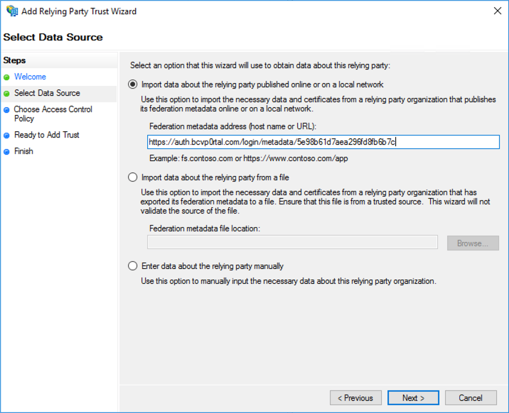

인증서 파일을 로컬 파일 시스템에 저장합니다. 텍스트 편집기에서 인증서를 엽니다. 브라이트코브 Enage에서 액세스 제어 프로필을 설정하는 데 사용되는 인증서입니다.
브라이트코브 인게이지 오픈
프로젝트 > 설정을클릭합니다.
왼쪽 탐색에서액세스 제어 프로파일을클릭합니다.
프로파일 작성을 클릭합니다.
이름을 지정한다음SSO - 액세스를 위해 사용자 이름과 암호 필요를 선택합니다.
SAML 2.0 끝점 (HTTP)필드에 ADFS 서버에 대한 IdP가 시작한 로그인 페이지의 URL을 입력합니다. 이 작업은 일반적으로 에서 끝납니다IdpInitiatedSignOn.aspx . 예를 들어, SP가 시작한 사인온 링크가 인https://sso-test.brightcove.com/adfs/ls경우 IdP가 시작한 사인온 페이지는 입니다https://sso-test.brightcove.com/adfs/ls/IdpInitiatedSignOn.aspx .
내 SSO 시스템이 ADFS (액티브 디렉터리 페더레이션 서비스) 옵션인지확인합니다.
복사 하 고 6 단계에서 저장 한 인증서를X.509 인증서필드에 붙여 넣습니다.
저장을클릭하여 액세스 제어 프로파일을 저장합니다. 새 액세스 제어 프로파일이 프로파일 목록에 나타나야 합니다.
AD FS 관리 응용 프로그램에서신뢰 당사자 트러스트를엽니다.
오른쪽 패널에서신뢰 당사자 신뢰 추가...를 클릭합니다.
마법사에서시작을클릭한 다음 15단계에서 표시된메타데이터 URL을페더레이션 메타데이터 주소필드에 붙여 넣습니다.

다음을클릭한 후 신뢰 당사자에게 이름을 지정합니다.
마침단계가 될 때까지다음을계속 클릭합니다. 이 응용 프로그램에 대한 클레임 발급 정책 구성확인란의 선택을 취소합니다. 닫기를클릭합니다.
이제 생성된 액세스 제어 프로필에 환경을 연결할 수 있습니다. 환경이 게시되면 탐색하면 ADFS 로그온 워크플로를 거쳐야 합니다.
 고객 지원 문의
고객 지원 문의 시스템 상태
시스템 상태